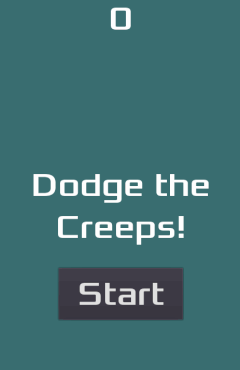

Game 2D đầu tiên của bạn
Trong loạt bài hướng dẫn từng bước này, bạn sẽ tạo game 2D hoàn chỉnh đầu tiên của mình với Godot. Cuối loạt bài, bạn sẽ có một game đơn giản nhưng hoàn chỉnh của riêng mình, giống như hình dưới đây.

Bạn sẽ học cách trình chỉnh sửa Godot hoạt động, cách tổ chức một dự án và xây dựng một game 2D.
Ghi chú
Dự án này là phần giới thiệu về Godot engine. Bài hướng dẫn giả định rằng bạn đã có chút kinh nghiệm lập trình. Nếu bạn hoàn toàn mới với lập trình, bạn nên bắt đầu tại đây: Ngôn ngữ script.
Game có tên "Dodge the Creeps!". Nhân vật của bạn phải di chuyển và né tránh kẻ địch càng lâu càng tốt.
Bạn sẽ học cách:
Tạo một game 2D hoàn chỉnh với trình chỉnh sửa Godot.
Tổ chức một dự án game đơn giản.
Di chuyển nhân vật người chơi và thay đổi sprite của nó.
Tạo kẻ địch ngẫu nhiên.
Đếm điểm.
Và nhiều hơn nữa.
Bạn sẽ thấy một loạt bài khác, nơi bạn tạo một game tương tự nhưng ở dạng 3D. Tuy nhiên, chúng tôi khuyên bạn nên bắt đầu với loạt bài này.
Tại sao bắt đầu với 2D?
Nếu bạn mới làm quen với phát triển game hoặc chưa quen với Godot, chúng tôi khuyên bạn nên bắt đầu với game 2D. Điều này giúp bạn làm quen với cả hai trước khi bắt tay vào game 3D, vốn thường phức tạp hơn.
Bạn có thể tìm thấy phiên bản hoàn chỉnh của dự án này tại địa chỉ sau:
Yêu cầu trước
Bài hướng dẫn từng bước này dành cho người mới bắt đầu đã học hết Từng bước một.
Nếu bạn là lập trình viên có kinh nghiệm, bạn có thể tìm mã nguồn đầy đủ của bản demo tại đây: Mã nguồn Dodge the Creeps.
Chúng tôi đã chuẩn bị sẵn một số asset cho game mà bạn cần tải về để có thể bắt tay ngay vào phần code.
Bạn có thể tải chúng về bằng cách nhấp vào liên kết bên dưới.